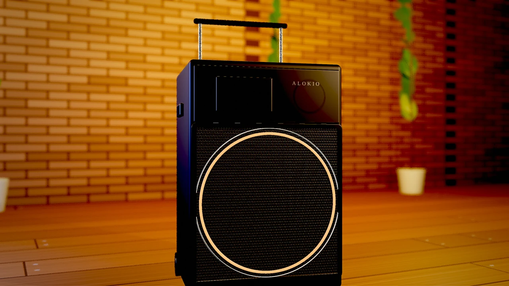
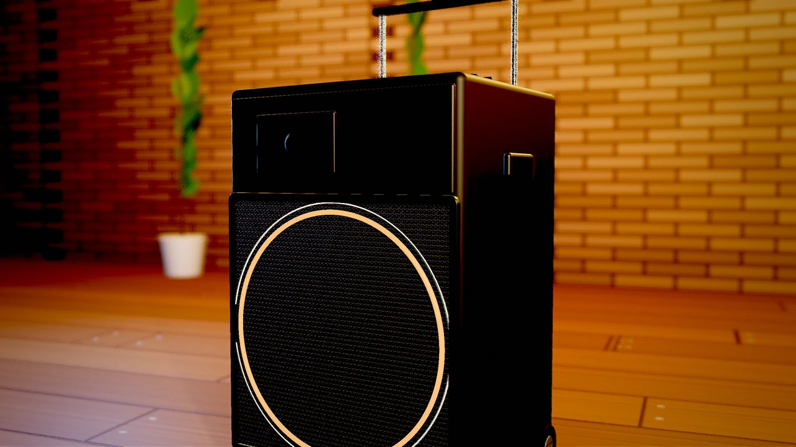

Cùng một chiếc loa kéo, có người hát nghe như ca sĩ, có người hát nghe như đang gọi điện trong nhà tắm. Phần lớn khác biệt không nằm ở giọng mà nằm ở cách vặn mấy núm trên bảng điều khiển. Bài viết này giải thích từng núm, và đưa ra một cấu hình khởi đầu mà bạn có thể áp dụng ngay tối nay.

Hiểu bảng điều khiển trước khi vặn
Trên loa kéo Alokio thường có hai nhóm núm:
- Nhóm nhạc (Music): chỉnh âm lượng, bass và treble của nhạc nền.
- Nhóm micro (Mic): chỉnh âm lượng, bass, treble và echo của giọng hát.
Một lỗi phổ biến là chỉnh bass nhạc nhưng quên rằng giọng hát có núm bass riêng. Hãy luôn kiểm tra mình đang vặn núm của nhóm nào.
Echo: gia vị cho giọng hát
Echo tạo cảm giác giọng hát có không gian, như đang đứng trên sân khấu. Một chút echo làm giọng dày và mượt hơn, che bớt những chỗ hụt hơi. Quá nhiều echo thì giọng bị nhoè, chữ này chồng lên chữ kia.
- Nhạc chậm, bolero, ballad: echo khoảng 40–50%, độ trễ (delay) dài.
- Nhạc trẻ, pop: echo khoảng 25–35%, độ trễ trung bình.
- Nhạc nhanh, rap: echo dưới 20% hoặc tắt hẳn để giữ rõ chữ.
Nếu loa có núm Repeat, đó là số lần tiếng vọng lặp lại. Để repeat thấp với nhạc nhanh và cao hơn với nhạc chậm.
Bass micro: ấm nhưng đừng ù
Bass micro làm giọng ấm và dày, đặc biệt hữu ích với giọng nữ hoặc giọng mỏng. Nhưng micro đặt gần miệng vốn đã có hiệu ứng tăng trầm (proximity effect), nên vặn bass micro quá cao sẽ khiến giọng ù như hát qua chăn.
Hãy bắt đầu ở mức giữa (12 giờ trên mặt núm), hát thử một câu, rồi giảm dần đến khi giọng vừa ấm vừa rõ chữ.
Treble micro: độ sáng của giọng
Treble quyết định giọng hát có "sáng" và nổi lên trên nhạc nền hay không. Thiếu treble, giọng chìm. Thừa treble, giọng chói, tiếng "s" và "x" rít lên và dễ gây hú.
- Giọng nam trầm: tăng treble nhẹ, khoảng 1–2 giờ trên mặt núm.
- Giọng nữ cao: giữ treble ở giữa hoặc giảm nhẹ.
Cấu hình khởi đầu cho phòng khách
- Âm lượng nhạc: 40%. Âm lượng micro: cao hơn nhạc một chút.
- Bass nhạc: 1 giờ. Treble nhạc: 12 giờ.
- Bass micro: 11 giờ. Treble micro: 12–1 giờ.
- Echo: 35%. Repeat: 30%.
Từ cấu hình này, hãy hát thử điệp khúc một bài quen thuộc và điều chỉnh từng núm một, mỗi lần chỉ vặn một núm.

Chống hú: vị trí quan trọng hơn núm vặn
Tiếng hú (feedback) xảy ra khi micro thu lại chính âm thanh phát ra từ loa, khuếch đại lên, rồi lại thu vào, tạo thành vòng lặp. Để tránh hú:
- Không chĩa micro vào mặt loa, và đứng ở phía trước hoặc bên cạnh loa thay vì phía trước mặt loa.
- Giữ khoảng cách ít nhất 1–2 mét giữa người hát và loa.
- Nếu hú ở tiếng cao, giảm treble micro. Nếu hú ở tiếng trầm, giảm bass micro.
- Cầm micro ở thân, không bịt lưới micro bằng tay.
Thử ngay trên website
Ở chương "Bên trong Alokio" trên trang chủ, tab "Âm thanh" cho bạn vặn thử bass và treble trên một chiếc loa 3D và nghe thay đổi ngay lập tức. Đó là cách nhanh nhất để "luyện tai" trước khi cầm micro thật. Chúc bạn những buổi hát thật vui.
Câu hỏi thường gặp
Vì sao giọng mình nghe hay trên loa nhà bạn nhưng dở trên loa nhà mình? Thường là do echo và treble đang để rất khác nhau, hoặc phòng nhà bạn có nhiều đồ vải hấp thụ âm hơn. Hãy ghi lại cấu hình bạn thấy hay rồi áp dụng lại trên loa của mình.
Có nên tắt hẳn echo không? Với nhạc nhanh hoặc khi muốn luyện giọng, tắt echo giúp nghe rõ lỗi để sửa. Còn khi hát vui cùng gia đình, một chút echo sẽ làm mọi người tự tin hơn nhiều.
Micro có cần chỉnh riêng cho từng người? Nếu có thể, hãy dành micro 1 cho giọng nam và micro 2 cho giọng nữ, mỗi micro chỉnh bass và treble riêng. Như vậy không ai phải vặn lại núm mỗi khi chuyền micro.
Sản phẩm trong bài